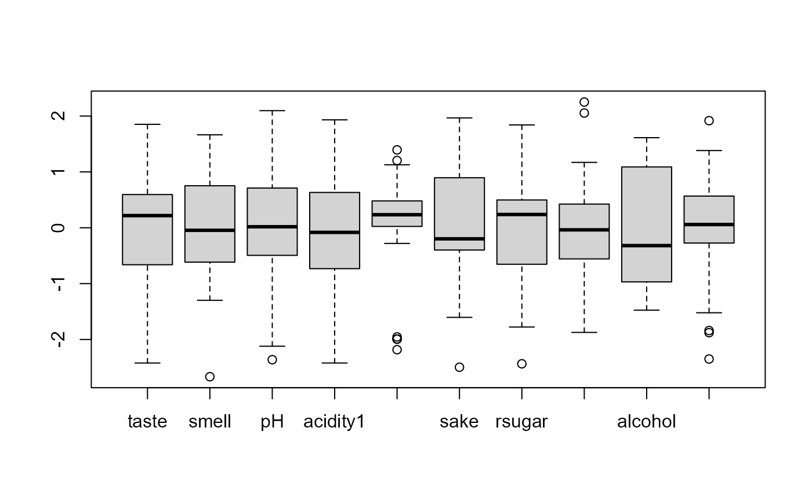
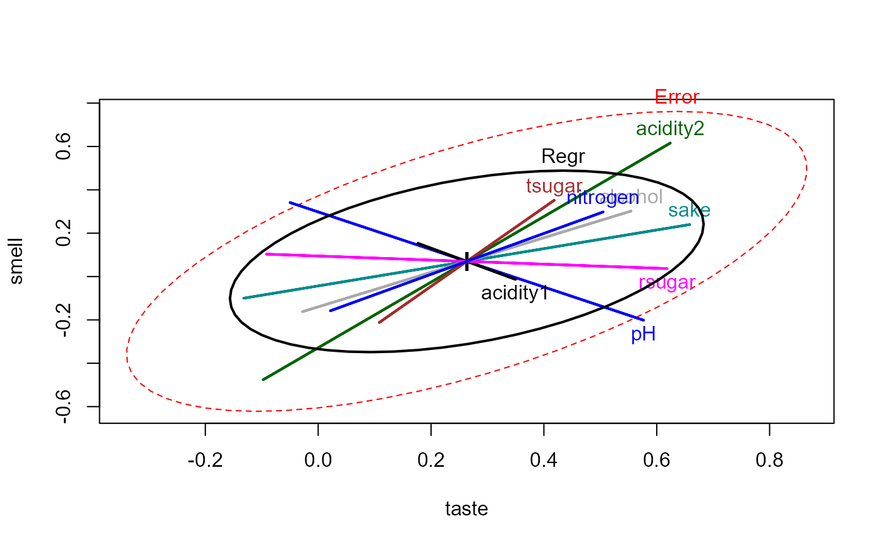

Siotani et al. (1985) describe a study of Japanese rice wine (sake) used to
investigate the relationship between two subjective ratings (taste
and smell) and a number of physical measurements on 30 brands of
sake.
Format
A data frame with 30 observations on the following 10 variables.
tastemean taste rating
smellmean smell rating
pHpH measurement
acidity1one measure of acidity
acidity2another measure of acidity
sakeSake-meter score
rsugardirect reducing sugar content
tsugartotal sugar content
alcoholalcohol content
nitrogenformol-nitrogen content
Source
Siotani, M. Hayakawa, T. & Fujikoshi, Y. (1985). Modern Multivariate Statistical Analysis: A Graduate Course and Handbook. American Sciences Press, p. 217.
Details
These data provide one example of a case where a multivariate regression doesn't benefit from having multiple outcome measures, using the standard tests. Barrett (2003) uses this data to illustrate influence measures for multivariate regression models.
The taste and smell values are the mean ratings of 10 experts
on some unknown scale.
References
Barrett, B. E. (2003). Understanding Influence in Multivariate Regression. Communications in Statistics - Theory and Methods 32 (3), 667-680.
Examples
data(Sake)
# quick look at the data
boxplot(scale(Sake))

Sake.mod <- lm(cbind(taste,smell) ~ ., data=Sake)
library(car)
car::Anova(Sake.mod)
#>
#> Type II MANOVA Tests: Pillai test statistic
#> Df test stat approx F num Df den Df Pr(>F)
#> pH 1 0.276246 3.8169 2 20 0.03944 *
#> acidity1 1 0.030788 0.3177 2 20 0.73145
#> acidity2 1 0.183297 2.2444 2 20 0.13202
#> sake 1 0.141187 1.6440 2 20 0.21827
#> rsugar 1 0.178200 2.1684 2 20 0.14050
#> tsugar 1 0.054842 0.5802 2 20 0.56891
#> alcohol 1 0.075954 0.8220 2 20 0.45387
#> nitrogen 1 0.056486 0.5987 2 20 0.55909
#> ---
#> Signif. codes: 0 '***' 0.001 '**' 0.01 '*' 0.05 '.' 0.1 ' ' 1
predictors <- colnames(Sake)[-(1:2)]
# overall multivariate regression test
linearHypothesis(Sake.mod, predictors)
#>
#> Sum of squares and products for the hypothesis:
#> taste smell
#> taste 1.4171079 0.5786338
#> smell 0.5786338 1.4095094
#>
#> Sum of squares and products for error:
#> taste smell
#> taste 3.172559 2.248366
#> smell 2.248366 4.173491
#>
#> Multivariate Tests:
#> Df test stat approx F num Df den Df Pr(>F)
#> Pillai 8 0.6300580 1.207279 16 42 0.30236
#> Wilks 8 0.4642360 1.169193 16 40 0.33210
#> Hotelling-Lawley 8 0.9509599 1.129265 16 38 0.36489
#> Roy 8 0.6270207 1.645929 8 21 0.17134
heplot(Sake.mod, hypotheses=list("Regr" = predictors))
